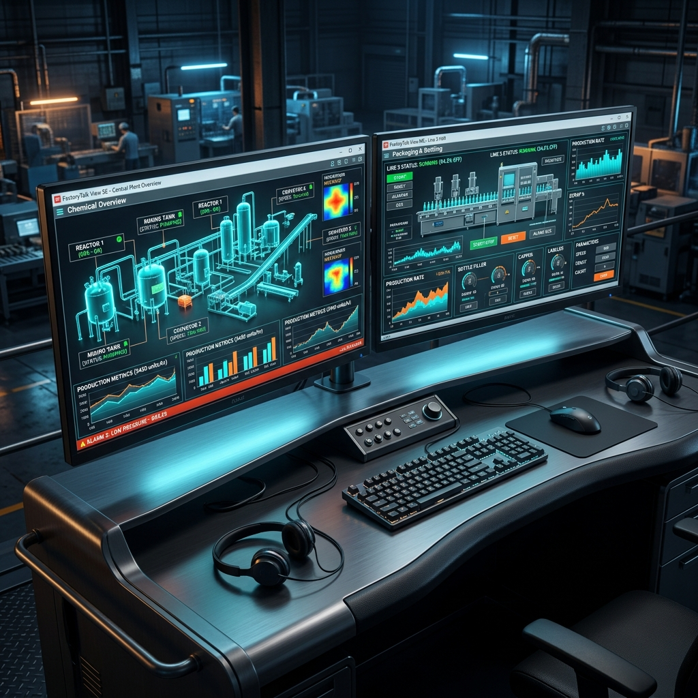

Diferencias entre FactoryTalk View SE y ME: Guía de Selección para HMI y SCADA
Publicado por el Equipo de Ingeniería de Robologix Automation | Coahuila, México
Resumen de Ingeniería:
FactoryTalk View Machine Edition (ME) está diseñado para soluciones HMI monousuario y dedicadas a nivel de máquina ejecutadas en paneles táctiles PanelView Plus o PCs industriales compactos. Por su parte, FactoryTalk View Site Edition (SE) es una plataforma SCADA distribuida multiusuario cliente-servidor capaz de gestionar proyectos extensos de planta completa con redundancia de servidores, almacenamiento masivo de datos históricos (Historian) y control centralizado de seguridad.

Estación de trabajo industrial con pantallas SCADA de FactoryTalk View.
1. Comparativa de Arquitectura
- FactoryTalk View ME: Aplicación empaquetada (runtime file .mer) destinada a una única terminal física. Ejecuta comunicación directa punto a punto con el PLC local mediante FactoryTalk Linx.
- FactoryTalk View SE: Arquitectura escalable que soporta múltiples servidores HMI, servidores de alarmas y eventos (Tag Alarm and Event Server) y decenas de clientes de visualización concurrentes (Thick Clients, ThinClients, HTML5 Web Browser Clients).
2. ¿Cuándo Elegir ME o SE?
Elija FactoryTalk View ME si:
- El operador interactúa con una sola celda o máquina cerrada.
- Se utiliza un panel táctil de la serie PanelView Plus 6 o 7.
- No se requiere redundancia de servidores ni gestión de múltiples turnos distribuidos.
Elija FactoryTalk View SE si:
- Se requiere una sala de control centralizada (Control Room) para monitorear múltiples líneas de ensamblaje.
- Se necesita alta disponibilidad con servidores primarios y secundarios en caliente (Hot Standby Failover).
- Se integra trazabilidad con base de datos SQL o FactoryTalk Historian.
Desarrollo HMI/SCADA de Clase Mundial con Robologix
Pantallas ergonómicas enfocadas en la reducción de fatiga visual y rápido diagnóstico de alarmas.
Registro de tendencias, recetas de producción y reportes automáticos de paros de turno.
Atención a fallas de comunicación HMI/PLC en plantas de Saltillo, Ramos Arizpe y Derramadero.
Artículos Técnicos Relacionados:
¿Necesita Desarrollar o Migrar un Sistema SCADA FactoryTalk en Coahuila?
En Robologix Automation programamos pantallas HMI, servidores SCADA y migraciones de paneles obsoletos en Saltillo y Ramos Arizpe.
Hablar con un Ingeniero HMI/SCADA